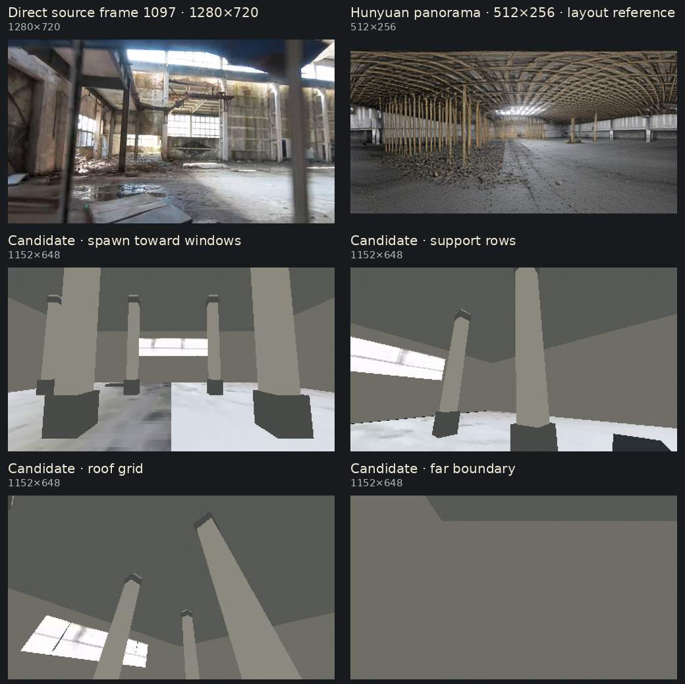
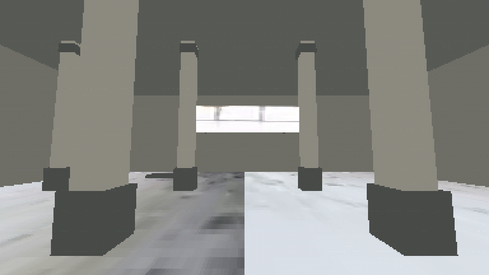
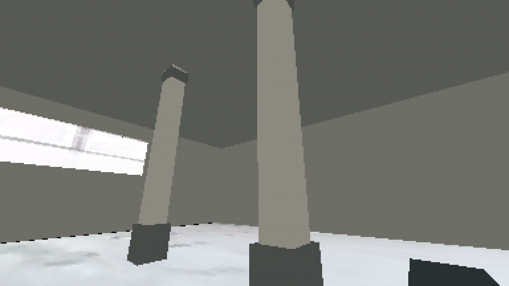
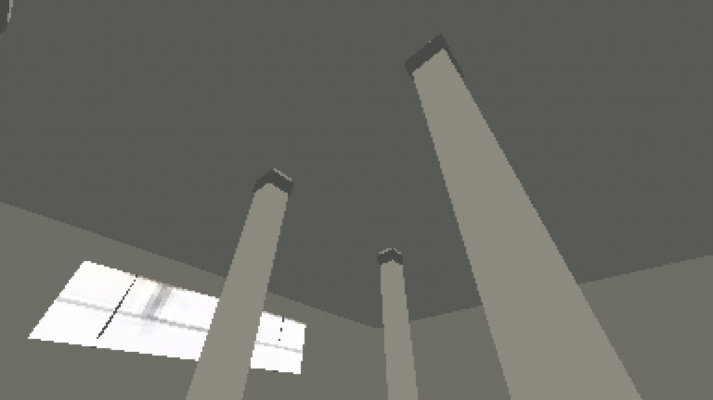
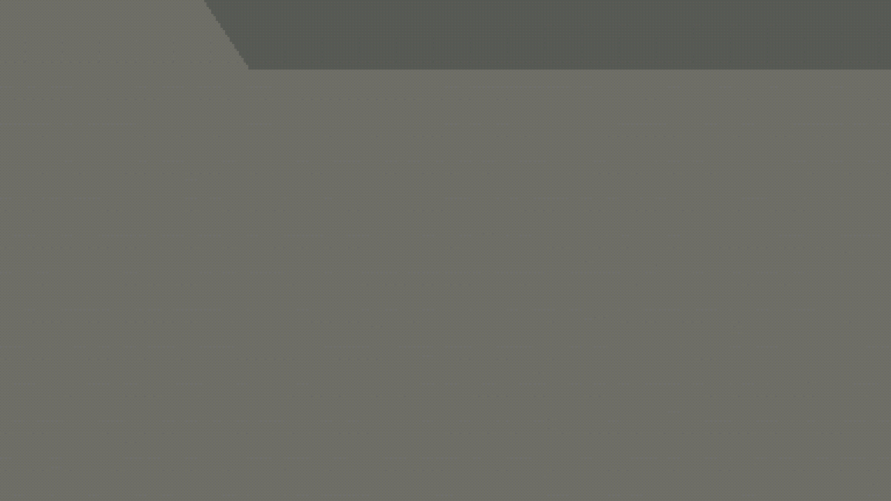
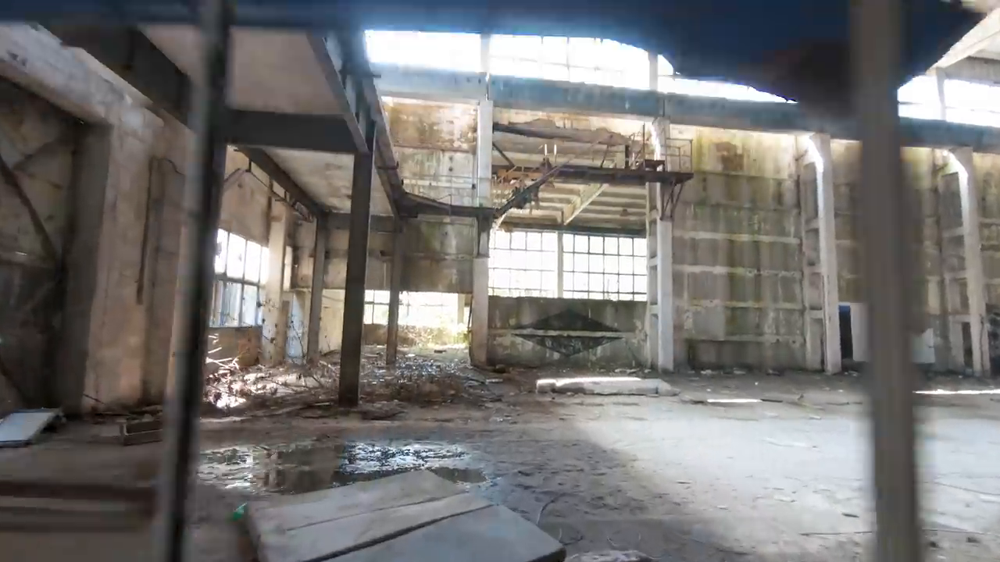
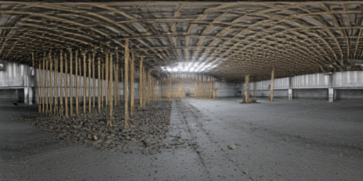

Chainlink #167 · operator-accepted reference industrial-hall-panorama-v3 · catalog admission pending.
industrial-hall-panorama-v3
The 512×256 Hunyuan panorama is a broad layout reference only. The playable scene uses authored geometry and direct crops from source frame 1097; no fixed panorama is rendered behind the player.





Zero-based frame 1096, PTS 36.533333 s, 1280×720.

512×256, attempt 005. Used for layout reference, not runtime projection or texture.

From workspace root:
godot4 --path godot_walk res://source_library/sources/video-ccf9722164a0bdc8/rooms/industrial-hall-panorama-v3/room.tscn
WASD + mouse to walk/look; press R to reset to the safe spawn; Esc releases the mouse.
Candidate report · Authored layout diagram · Versioned adaptation record
View the candidate-bound acceptance record. Catalog admission, registration and scale calibration remain pending.